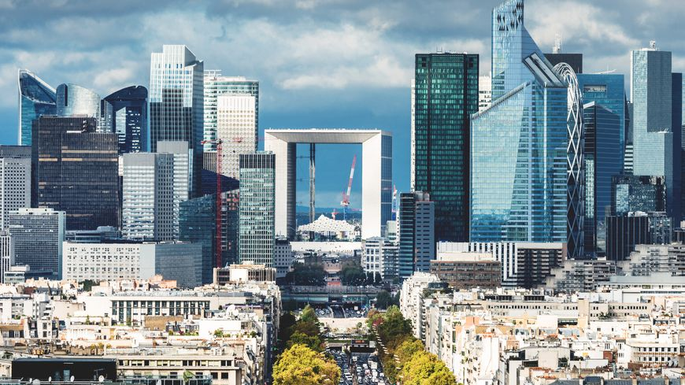

la Tour Eiffel
la Tour Eiffel
Paris ville des lumieres
Paris
Un voyage à travers le temps
Une préfiguration du musée du Louvre est imaginée en 1775-1776 par le comte d'Angivillier, directeur général des Bâtiments du roi, comme lieu de présentation des chefs-d'œuvre de la collection de la Couronne. Ce musée n'a été inauguré qu'en 1793 sous l'appellation de Muséum central des arts de la République dans le palais du Louvre, ancienne résidence royale située au centre de Paris, est aujourd'hui le plus grand musée d'art et d'antiquités au monde. Sa surface d'exposition est de 72 735 m27.
Fin 2016, ses collections comprenaient 554 731 œuvres, dont 35 000 exposées et 264 486 œuvres graphiques. Celles-ci présentent l'art occidental du Moyen Âge à 1848, celui des civilisations antiques qui l'ont précédé et influencé (orientales, égyptienne, grecque, étrusque et romaine), les arts des premiers chrétiens et de l'islam.
Situé dans le 1er arrondissement de Paris, sur la rive droite entre la Seine et la rue de Rivoli, le musée se signale par la pyramide de verre de son hall d'accueil, érigée en 1989 dans la cour Napoléon et qui en est devenue emblématique, tandis que la statue équestre de Louis XIV constitue le point de départ de l'axe historique parisien.
la DEFENSE
Je vous présente dans cet article le quartier de la Défense, le plus grand quartier d’affaires d’Europe. Centre économique de Paris, il regroupe les sièges sociaux des plus grandes entreprises françaises. Mais au-delà de ces grattes ciel qui voit chaque jour défilé des hordes de businessmen, ce quartier attire également de nombreux touristes qui viennent admirer l’architecture unique de ce lieu. Organisé autour du parvis de la Défense avec la Grande Arche qui trône majestueusement à son extrémité dans le prolongement de l’axe qui relie le jardin des tuileries et l’Arc de Triomphe, le quartier de la Grande Arche se distingue en alliant tous les attributs d’un quartier d’affaires (immeubles de bureaux, hôtels, centre commerciaux, cafés et restaurants) et des lieux uniques : œuvres d’art, jardins, fontaines gigantesques, … Présentation de ce quartier atypique de Paris.
